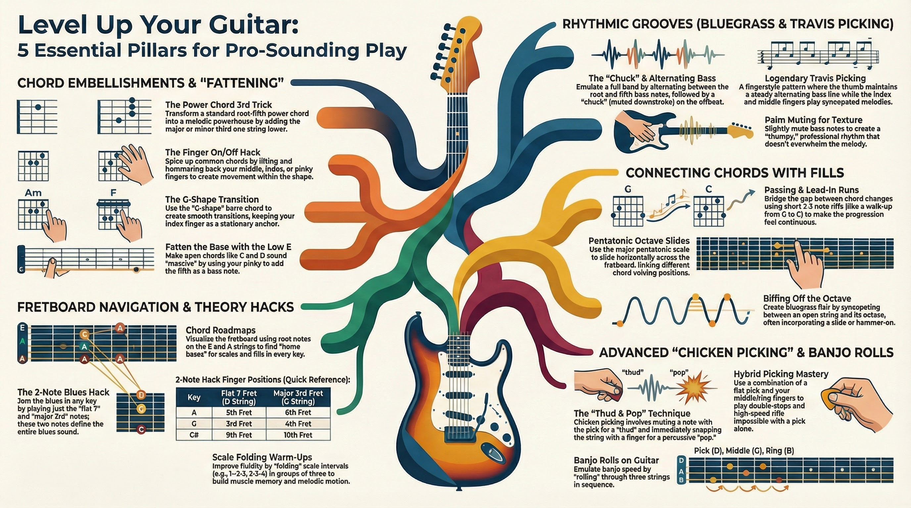

Incremental skill building from capo'd open chords to chicken picking, pentatonic licks, bass runs, and fluid chord-to-lead transitions.
When placing a capo on the 3rd fret to play in the key of Bb major, an acoustic guitarist utilizes the familiar, foundational open chord shapes of the key of G major. The G major position is incredibly versatile, allowing players to build a foundation of simple open chords—G, C, D, Em, and Am—and incrementally layer advanced techniques like chicken picking, pentatonic fills, intricate bass runs, and complex harmonic extensions. This comprehensive guide outlines a progressive pathway for acoustic guitarists to evolve from playing static, three-note chords to executing fluid, dynamic rhythm and lead playing simultaneously.
Phase 1: Enhancing Basic Open Chords and Finding Harmonic Nuance
Before diving into blazing leads or complex hybrid picking, the crucial first step to advancing acoustic guitar skills is making basic open chords sound more interesting and full. A common issue for advancing beginners is that standard open chords can sound weak, uninspired, or rhythmically stagnant. One immediate method to thicken these chords is to incorporate the low E string into voicings that traditionally omit it. For instance, when playing a standard C major chord, you can move your ring finger to the third fret of the low E string (a G note) and place your pinky on the third fret of the A string (the C root note). This creates a massive, fat-sounding C chord because it utilizes all six strings. You can slide this exact shape up two frets to create a powerful, highly resonant D chord variant.
Adding small flourishes to these foundational chords is the next incremental step. You can instantly spice up a standard country or pop progression consisting of C, Am, G, and F by simply lifting and replacing specific fingers while holding the chord shapes. For a C major chord, try repeatedly lifting and placing your middle finger on the D string (the E note) to create rhythmic hammer-ons and pull-offs while the rest of the chord rings out. This same middle-finger flutter can be applied to an Fmaj7 chord, or you can lift both the middle and ring fingers on an Am chord. When playing the G chord—specifically voiced with the ring finger, middle finger, and pinky on the low E, A, and high E strings, respectively—you can lift your middle finger off the A string to add a distinct, open flavor. Additionally, incorporating your pinky on the third fret of the high E string (a G note) across C, Am, and F chords turns them into harmonically rich variations, like an Am7 or Fadd9, while maintaining the steady progression.
As you become more comfortable with these minor adjustments, you can start experimenting with suspended chords, specifically sus2 and sus4 shapes. A sus4 chord replaces the major third with a perfect fourth, while a sus2 replaces it with a major second, creating a beautifully unresolved, floating sound. Mastering sus2 and sus4 shapes off your standard open E, A, and D chord shapes allows you to turn basic strumming into an interactive, melodic experience where chords continuously resolve and un-resolve. Another powerful trick to build complex chords is taking standard open chord shapes—like D, Am, or E major—and sliding them high up the neck while letting the top open strings (the high E and B strings) ring out. Moving a D shape to the 5th or 7th fret, or sliding an E major shape up the neck, creates eerie, atmospheric, and beautifully complex chord voicings without requiring any advanced music theory knowledge.
Phase 2: Rhythmic Precision and Bluegrass Mechanics
Once your chords are embellished, developing right-hand precision and a solid rhythmic pocket is essential. The foundational rhythm of country and bluegrass acoustic guitar is the "boom-chick" pattern. This involves picking a single bass note (the "boom") on the downbeat, followed by a downward strum of the higher strings (the "chick") on the offbeat. To emulate a bass player within your strumming, you can introduce an "alternating bass" technique. For a C chord, you pick the C root note on the A string, strum, and then physically move your finger to the low E string to pick the G note (the fifth of the chord) before strumming again. A helpful hack to avoid lifting and moving your finger is to use the modified "fat" C chord mentioned earlier, alternating your pick between the low E and A strings which are already fretted.
To ensure timing and precision, targeted warm-up routines using a metronome are crucial. Start with basic G major scale exercises utilizing strict alternate picking, meaning you alternate downstrokes and upstrokes completely consistently regardless of string changes. A primary goal during this exercise is to equalize the volume and physical pressure of your downstrokes and upstrokes, ensuring a perfectly smooth dynamic output. You can then apply "scale folding," an intermediate timing exercise where you play groups of three notes in a scale, drop back a degree, and play three more (e.g., G-A-B, A-B-C, B-C-D), running this sequence using eighth and sixteenth notes to build fretboard fluidity and impeccable timing.
As your rhythm solidifies, begin mixing passing runs and lead-in runs between chord changes to break up the monotony of continuous strumming. A passing run is a short, two- or three-note riff that connects one chord seamlessly to the next. For example, when transitioning from G to D, you might pick the open A string, the second fret of the A string, the open A again, and finally land on the open D string exactly on the downbeat as you strum the D chord. You can also "walk up" the bassline between chords, such as playing the individual bass notes G, A, B, and C to connect a G major chord to a C major chord. No roots or bluegrass foundation is complete without the famous "G run," an iconic lick that starts and ends on the root note (G) and signals a definitive musical resolution to the listener.
Phase 3: The Art of Chicken Picking and Hybrid Right-Hand Techniques
With a rhythmic foundation secured, the guitarist can begin tackling "chicken picking," a definitive hybrid picking technique that gives country and acoustic guitar its characteristic clucking, percussive snap. Chicken picking utilizes a combination of a flat pick (held normally between the thumb and index finger) and the bare middle and ring fingers of the picking hand. The essence of the sound is alternating a heavily muted note played with the pick, followed by a note violently plucked (or "popped") by a finger. To achieve the pop, you must dig your finger under the string, pull it slightly away from the fretboard, and let it snap back against the frets. Developing this technique takes serious time and can initially cause physical discomfort, soreness, and broken nails as you build calluses and right-hand muscle memory.
To build this skill incrementally, start with a targeted exercise isolating just two strings. Hold your pick ready for the G string and rest your middle or ring finger on the high E string. Begin by pinching both strings simultaneously, playing a G major scale ascending solely on the high E string (frets 3, 5, 7, 8, 10, 12, 14, 15) while continually striking the open G string with the pick. Once comfortable with the pinch, stagger the notes into eighth notes: strike the G string with the pick, then immediately pluck the high E string with the finger. Finally, add the true chicken picking flair by aggressively snapping that high E string so it snaps against the fretboard and punctuates the note.
Another excellent drill is practicing on a single string to develop coordination between the pick and the middle finger without the safety of string separation. While fretting a D note, play a muted strike with your pick (achieved by lightly resting your fretting hand on the strings), immediately followed by pressing the fret down and popping the exact same string with your middle finger. This rapid succession of a dead "thud" followed by a sharp "pop" creates the illusion of a clucking chicken. You can make this highly musical by integrating double stops and bends. Using hybrid picking to pluck the G and B strings simultaneously with your middle and ring fingers gives a perfectly unified attack that a flat pick cannot achieve.
To advance your hybrid picking to the next level, integrate "banjo rolls." This involves rolling your right hand using the pick, middle finger, and ring finger in quick succession to emulate a banjo player's syncopated arpeggios. Fret the 5th fret of the D string, while leaving the G and B strings open. Execute the repeating pattern: Pick (D string), Middle (G string), Ring (B string) to build complete finger independence. Banjo rolls open up a superpower on the guitar, allowing for cascading rhythms and lightning-fast cross-string leaps that are physically impossible with flatpicking alone.
Phase 4: Integrating Pentatonic Scale Embellishments and Fills
The next milestone is stepping outside of strict chord shapes by injecting pentatonic scale fills directly between your strums. When playing in the G major position (representing your capoed Bb major), you have immediate access to the G major and G minor pentatonic scales in the open, first position. A brilliant hack for navigating these scales is realizing that the major pentatonic scale shape, when shifted entirely up the fretboard by three frets, perfectly becomes the minor pentatonic scale. Switching back and forth between the major and minor pentatonic creates a bluesy, classic country tension that instantly elevates your playing.
To successfully map pentatonic fills around chords across the entire neck, you must visualize the fretboard using the CAGED system. Every chord shape has a corresponding pentatonic "box" built right around it, meaning you never have to blindly jump away from a chord to find a soloing scale. For example, if you are playing a standard G major barre chord (using the E-shape rooted on the 6th string), the major pentatonic scale falls perfectly under your fingers in that exact position. The most critical factor in adding these fills seamlessly is managing your "part structure"—deliberately deciding to play two beats of a rhythm chord followed by a strict two-beat melodic fill.
A highly effective pentatonic fill technique is the sliding pentatonic scale on the lower strings. While holding a G chord rooted on the 6th string, strike the root note, then use your ring finger to slide from the 3rd to the 5th fret on the A string, and jump to the D string, walking right up the pentatonic scale. You can descend back into the chord using rapid sixteenth notes, sliding down the scale to smoothly land right on the downbeat of the next chord in the progression. This sliding concept applies identically to chords rooted on the A string (like a C major barre chord using the A-shape), giving you universal application.
Another fantastic way to embellish within these shapes is through triad double-stops hidden directly within your pentatonic boxes. By barring your index finger across two strings (for example, the D and G strings) within your overarching chord shape, you can rhythmically hammer on with your ring finger a whole step above. This rhythmic hammering of double stops creates a piano-like, soulful flavor and works seamlessly because you are simply visualizing the smaller triad shapes sitting inside your primary chord. When playing a bluesier progression, a simple two-note hack works wonders for rhythm fills: simply isolate the flat-7th and major 3rd notes of any dominant chord on the D and G strings. By sliding this two-note shape down one single fret when moving to the IV chord, or up one single fret for the V chord, you imply the entire chord progression with minimalist, funky precision while leaving massive sonic space for a band or your own vocals.
Phase 5: Seamless Transitions from Chords to Lead Guitar
The final step in this comprehensive acoustic guitar progression is breaking the barrier entirely between rhythm guitar and lead guitar, seamlessly mixing full chords, bass runs, hybrid picked double stops, and blistering single-note lines. To avoid getting lost when venturing into lead lines, utilize "chord roadmaps". A chord roadmap involves plotting the root notes of every diatonic chord in your key along a single string. In G major, your root notes on the low E string are sequentially mapped out: 1 (G), 2 (Am), 3 (Bm), 4 (C), 5 (D), 6 (Em), and 7 (F# diminished). You can build an identical, secondary roadmap entirely on the A string.
By memorizing where these diatonic root notes live, you create a skeletal framework for improvising. Instead of strumming a chord, stopping entirely, moving up the neck to play a disjointed lick, and jumping back down, you use the notes in your roadmap to riff directly between the chord changes. You can fill the space between the roadmap's root notes with other notes native to the key, creating a horizontal scale that connects your chords horizontally up and down the neck. As long as you land back on the correct root note when the downbeat hits, you have total improvisational freedom.
As you advance, you can move from horizontal roadmap playing to vertical scale playing. The minor pentatonic scale shape built off the 6th chord (the relative minor) is a safe "home base" for vertical improvising. In the key of G major, this is the E minor pentatonic scale. Because the minor pentatonic deliberately excludes the highly dissonant 4th and 7th scale degrees, these five notes will sound harmonically pleasant over almost any chord in the key. You can strum a D major chord, drop into an E minor pentatonic lick utilizing your chicken picking snaps, and jump right back to a G major rhythm pattern exactly on the beat.
To add the ultimate level of intricate complexity to your solo acoustic playing, experiment with Travis picking. Named after the legendary Merle Travis, this fingerstyle technique requires deep physical independence. Travis picking requires the thumb to play a continuous, alternating bassline on the downbeats, while the index and middle fingers syncopate melodies on the higher strings on the offbeats. By holding a simple open chord progression (like G, Am, C) and applying a Travis picking pattern, you can add hammered-on melodic walk-ups on the B and high E strings without ever dropping the driving, alternating bass. This technique makes a solo acoustic guitar sound like a full band, merging rhythm, bass, and lead into one cohesive, unstoppable sound.
Conclusion
Building advanced acoustic guitar skills—starting from basic open chords with a capo on the 3rd fret to play in Bb—is a journey of highly calculated, incremental layering. It begins with thickening standard voicings, finding harmonic nuance with sus chords, and applying simple left-hand finger lifts. From there, you ground your rhythm with alternating basslines and strict metronome-based alternate picking. Integrating the physical snap of hybrid chicken picking and cascading banjo rolls brings a dynamic, aggressive, and percussive edge to your right hand. By mapping out pentatonic scales using the CAGED system and connecting chord changes with horizontal fretboard roadmaps, the fretboard transforms from a series of disconnected, static chord blocks into a fluid, highly navigable landscape. Combining these elements—chord flourishes, chicken picking, pentatonic fills, and walking basslines—ultimately allows you to completely erase the boundary between rhythm and lead, resulting in a mature, comprehensive, and highly musical acoustic guitar style.
AI-generated podcast discussion synthesized from all 16 source videos.

Interactive quiz based on all 16 source videos. Click an answer to check.
Click a card to flip and reveal the answer.